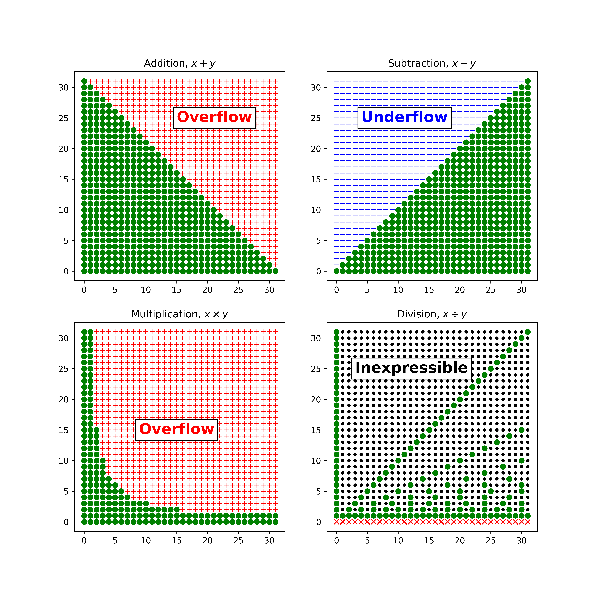

2. 构造unum的格式¶
Fig. 9 image-20200708091351476¶
位值制记数法(positional notion)和零的概念至少与算盘一样古老。 算盘最古老的形式是槽中的圆形石头，而不是杆上的珠子。 拉丁文中的石头一词是“演算”，显然它是“计算”一词的来源。 欧洲人从阿拉伯商人那里学到了很多关于位值制记数系统的知识，到1202年，斐波那契在Liber Abaci中发表了关于位值制记数系统的描述。 上图来自Gregor Reisch（1503）的名为Margarita Philosophica的木刻，描绘了使用阿拉伯数字的“算术家”与使用四位十进制算盘的“算盘家”之间的比赛。 显然这相当于16世纪的Mac与Windows的竞争。
2.1 位字符串的图形视图：值和闭合图¶
在以下各节中，我们以最简单的方式表示数字开始，并逐渐增加其复杂性以使其越来越富有表现力，最后会定义出unum的格式。即使您已经完全了解整数和浮点存储格式，可视化还是新颖的，您可能会发现它们很有趣。
实际上，整数和浮点数在大多数计算机上具有16位，32位或64位，但是太长的位字符串很难读取，我们不需要它来解释表示的每个部分。同样，使用较少的位也突出了我们需要克服的有限精度问题，因此以下部分将使用非常短的位字符串。
早期关于如何用二进制表示计数数字的争论就很少。我们使用与十进制数字相同的位置表示法，但是每个位置代表2的幂而不是10的幂，并且只允许数字0和1。 （我们使用这种字体来帮助区分二进制数字和十进制数字。）单词“ bit”是“ binary digits”的缩写，就像“ unum”是“ universal number”的缩写一样。
我们可以用值图显示位字符串表示的值。在值图中，水平轴显示位串，以数字顺序为二进制整数。垂直轴显示由字符串表示的特定格式的值，以十进制形式显示。由于位串代表特定数字，因此该图为系列离散点，而不是连续的线或曲线。
有些人喜欢通过图片来理解概念，有些人则喜欢使用符号公式，还有一些人则喜欢查看实际数字。我们将在以下各节中使用这三个部分，并让读者选择。作为公式，假设位串的长度为n位，即\(b_{n-1} ... b_2 b_1 b_0\)，其中每个\(b_i\)为0或1。位串\(b_{n-1} b_2 b_1 b_0\)表示数值是
如果我们使用n位，则表示的整数范围为0（所有位均设置为0）到\(2^n-1\)（所有位均设置为1）。有趣的问题：为什么基数的幂从左到右降低到零，而不是从零开始递增？答：这些是阿拉伯数字，阿拉伯文字从右到左！因此它原本的确从\(2^0\)（即1）开始，并且以基数进行幂增。大约1500年前，阿拉伯人就发明了这种计数的方式。
在从左到右阅读的国家/地区的孩子第一次学习多位数的数字时，他们经常问老师为什么数字不是从左到右依次个，十，百等等。以至于我们首先需要计算总位数以找出第一位数的含义。 （对于挑剔的历史学家：是的，阿拉伯人是从印度得到数字表示的想法的，印度在几个世纪前就已经发展了位置数学的形式。这就是为什么将其更确切地称为印度－阿拉伯数字系统的原因。）
二进制数字比十进制数更“稀薄”，需要更多的符号来表示同一个数字。通常用二进制写计数数字需要花费十进制的3.3倍。例如十进制值999999将变成11110100001000111111。要能一眼就能识别三位二进制数值会很有帮助，就像识别常见的三个字母的单词一样．
Fig. 10 image-20200708140910073¶
如果考虑如何在基本算术中使用固定大小的表示形式，则会出现一个缺点：一个运算的结果通常不能用这种格式表示！为了能直观显示，闭合图显示了对五位字符串进行加，减，乘和除的情况
较大的绿点表示可以表示答案的情况； 在其他任何地方都会出问题。 理想情况下，每个点都是绿点，表示该格式在算术运算中是封闭的（即闭包）。
加法大约一半的情况下结果可能溢出（标有“ +”号），这意味着结果大于最大可表示数字。
减法大约一半的情况下结果可能下溢（标记为“ –”号），这意味着结果小于最小的可表示数字零。
几乎所有输入值的乘法都会溢出。
除法运算后，要么数字不被整除（用小圆点“•”标记），要么更糟糕的是除零（用“x”标记）。
无论哪种方式，除少数特殊情况外，都无法确切表达计算的结果。
2.2 负数¶
Fig. 11 image-20200708162908410¶
1952年推出的IBM 701的操作员控制台console和框架frame，这是第一台用符号-幅度sign-magnitude二进制表示形式的商用计算机。 一个常听到的谣言是托马斯·沃森（Thomas J. Watson）说：“我认为全球计算机市场容量可能是五台。 他句话实际上是在对20个客户进行销售巡视之后，在一次股东大会上说的，他认为IBM 701将会有5个订单，但实际上公司收到了18个订单。
偏置格式 Biased format
有几种表示负数的方法，我们将需要其中一些。 例如，offset-m或extra-m方法表示从位的通常含义中减去固定数m，以便前m个数字表示负值。
有时这被称为偏置表示，因为代表值的偏差为负m。 如果我们使用n比特位，并希望将一半的值设为负，一半的值设为正，则最佳偏移m可能是接近最大无偏值一半的整数。 这几乎使得正值和负值平衡了。
假设\(m=2^{n-1}-1\), 那么对于３位的数字我们把其无符号表示的数中减去\(2^{3-1}-1=3\)就得到上图表示的对应有负数了．
那么比特串\(b_{n-1} ...b_2 b_1 b_0\)表示的数如下计算
这样是否能让更多的结果编程数学可表示的呢？这里同样用偏置\(2^{5-1}-1=15\) 来看看，用同样的符号表示可表示，上溢，下溢和不可表示作图．
TODO: write script to generate the diagram
Fig. 12 image-20200709170709410¶
这里有提高了，加减法的75%结果都是可表示的（前面只有50%）
符号幅度格式
表示正和负二进制数的另一种方法是符号幅度格式（sign-magnitude），这与我们通常编写带符号十进制数的方式更像：如果字符串为负，则在字符串前放置“ –”，如果字符串为正，则在字符串前面为空或者放个’+’。我们可以将0位用于正数，将1位用于负数，并将字符串的第一位视为符号位，将其他位视为幅度。这是可以分割位字符串的想法的开始，对于每个部分的含义使用不同的规则。
为了使值图中更清楚，我们将每个字符串的符号位用红色编码，并在符号位和其他位之间添加一个空格。这个表示法的次要缺点是，有两种方法可以表示零值。冗余浪费了一点。使用三位字符串，我们只能表示七个不同的数字，而不是八个。
在计算的早期，IBM在其第一台使用真空管作为逻辑元件的科学计算机中偏爱符号幅度格式。可以通过以下方式设想六位符号幅度数，其中我们区分符号位s和双幅度位，其含义与简单计数数相同：
Fig. 13 image-20200708185347129¶
用６bit符号－幅度格式我们可以表示从-31到+31的整数，一般地讲\(sb_{n-2}... b_2 b_1 b_0\)表示的数是
用符号幅度格式的好处是要把改变一个数的符号是很简单的，只需要翻转最高位就好．所以减法等同于加上一个翻转的数．取绝对值也很简单，只需要把符号强制为０．
检测一个数是正数还是负数也是一样的简单，当然你还需要看这个数的幅度是不是全０．如果是那么符号为负并没有意义．同样检查两个数是不是相等也不能简单的要求两者所有的位相等，因为０有两个表示需要特别处理．
下面的闭环图显示出符号幅度格式跟对应的偏置格式的表示能力差不多．但是象限的方向不同．而且我们对于上溢与下溢不再区分，本质是幅度溢出．除法可以产生下溢因为1/4的结果在范围内但是最小的非零幅度是1.
Fig. 14 image-20200710100105341¶
现在看来这些表示最弱的是对于乘除法不够闭环．所以我们需要引入东西使得其结果更加鲁棒．除了像加减法一样平衡正负数，也需要要平衡大和小的数．乘法趋向于是数值变大从而上溢，而除法趋向是数据变小从而下溢．如果我们能够改变数的尺度，使得一半时间的幅度小于１，那么乘除法就会同样的均衡了，即大小数基本对半．
2.3 定点数¶
Fig. 15 image-20200710102205350¶
这是一个应该用定点数而没有用的例子
能表示有符号数的下一步是表示非整的分数．同样这也有好多种方法．比如我们可以分别存储分子与分母，比如用(011, 111)表示\(\frac{3}{7}\). 有的有理数算术系统是基于这个方式的，但是不太常用．可能原因是产生一个共同分母需要额外的计算，而且其数字会持续增长，很快就到溢出了．
给读者的练习: 画一个6比特的有理数算术的闭环图，分配分子与分母不同比特，看看是否能产生出更多可以表示的数值？如果用第一比特做符号位呢？ |
使用带小数点的数字的二进制模拟更为简单。 正如负数可以用偏移量或偏差表示一样，我们可以将“二进制点”放置在位字符串中的某个位置。 该点右边的数字表示2的负次幂，所以0.1、0.01和0.001的二进制表示的是\(\frac{1}{2}，\frac{1}{4}，\frac{1}{8}\)，与十进制代表\(\frac{1}{10}，\frac{1}{100}，\frac{1}{1000}\)一样。
例如，数字\(13\frac{1}{8}\)可表示为\(8 + 4 +1 + \frac{1}{8}\)或二进制1101.001。 如果该格式将小数点放在最后三位数字的前面，则表示的整数应跟除\(2^3 = 8\)一样。
下面是两位小数的值图
Fig. 16 image-20200710104459121¶
下面是一个9位数的有符号小数，小数点离左边一位，符号幅度表示
Fig. 17 image-20200710104616539¶
举例，如果比特串是\(1 00000001\), 那么表示的是\(-2^{-7}=-\frac{1}{128}=-0.0078125\). 首位的１表示是负数，其他位表示幅度为\(0.0000001\)的二进制数
抽象化地表示: \(sb_{n-2}... b_2 b_1 b_0\)表示的数是
可以使用这种固定格式执行数学运算的计算机非常有限，但是由于在使用这种格式的计算机制造时相对容易，因此它在早期的计算机很流行。 基于定点格式的算术运算不会占用很多逻辑门，并且减少了乘除法运算下溢的次数.
定点在财务计算中效果很好，因为大多数数学运算都是在加法和减法上进行的。 使用定点进行科学计算是一项繁重的工作，因为在乘或除时，需要不断地注意二进制数右边或左边的数字是否用完。
下面闭合图是用于五位符号幅度定点数，在小数点左右分别有两个位：
Fig. 18 image-20200710105820572¶
缩放后的加法和减法不变，但是乘法和除法开始出现类似于织布花纹的模式。 乘法运算有效数字的范围现在下溢和上溢区域开始有些平衡了，但这是有代价的，即x和y的乘积结果大都需要多于四位连续二进制数字，因此L形区域现在渗透有无法表示的值。 例如，二进制的11.01乘以00.11（即十进制的3.25乘以0.75）可以表示为10.0111。如果我们在符号位之后有六位数字那么表示是精确的．而数字10.10是一个近似值，但是它代表一个不同的数字。 以十进制表示，这些值为2.4375和2.5。 我们是否应该接受2.5作为2.4375的“四舍五入”值呢？
接受不正确但“接近”的结果也可以填补除法闭合图中的许多空白，但这有可能导致滑坡谬误（Slippery slope）。 |
滑坡谬误（Slippery slope）是一种逻辑谬论，即不合理地使用连串的因果关系，将“可能性”转化为“必然性”，以达到某种意欲之结论。
滑坡谬误的典型形式为“如果发生A，接着就会发生B，接着就会发生C，接着就会发生D，……，接着就会发生Z”，而后通常会明示或暗示地推论“Z不应该发生，因此我们不应允许A发生”。A至B、B至C、C至D、……等因果关系好似一个个“坡”，从A推论至Z的过程就像一个滑坡。
滑坡谬误的问题在于，每个“坡”的因果强度不一，有些因果关系只是可能、而非必然，有些因果关系相当微弱，有些因果关系甚至是未知或缺乏证据的，因而即使A发生，也无法一路滑到Z，Z并非必然（或极可能）发生。
相对地，若有充足证据显示每个“坡”都有合理、强烈的因果连结，即不构成滑坡谬误。
下一步是在位串中创建一个新字段，该字段指示二进制点在哪里，而不是将其保持在固定位置。 我们使用位来表示符号和大小，但也使用可变比例因子作为每个数字的一部分。
2.4 浮点格式 (终于谈到了)¶
如开头所述，浮点的祖先是科学计数法。例如，使用带有符号，三个有效十进制数字和带有两个十进制数字的带符号指数的科学计数法，我们可以表示
表示零是一种特殊情况。对于其他每个数字，都会对指数进行调整，以使小数点前有1到9的数字。您不会写\(0.06\times10^{17}\)，因为那就像是拼写错误。格式规则说您将数字归一化(normalize)为\(6.00\times10^{15}\)。一个例外是允许0.00作为有效数字，然后不在乎指数或符号是什么。这样的例外处理显得不优雅。
另一种选择：如果指数是最小值–99，则允许小数部分低于1.00，使得下面数字
均匀地填充零和最小正数\(1.00\times10^{-99}\)之间的间隙（对于这些数字的负数形式也是如此）。 这称为渐进下溢(gradual underflow)，由于前导数字小于1不再是归一化的，所以这些数字称为次归一化数subnormal。在某些人看来，这似乎需要做很多工作去支持这些特别小的数。事实证明，当表示形式为二进制且位串的长度较小时，使用此思想绝对必要。值图将证明这一点。 科学计数法的二进制形式表示一个介于1.000…0和1.111….1之间(不管分配了多少)的有效数字或分数值（fraction）。 Konrad Zuse是第一个注意到第一位始终为1的人，因此没有理由将其存储下来。 （该技巧与十进制分数没有明显的等效关系，其中第一位数字可以是1到9之间的任何值，必须将其存储。）因此，二进制点左侧的隐含1位称为隐藏位(hidden bit)。如果我们使用一些位来显示比例因子，那么这些比例位应该在字符串中的什么位置？在标志位的左边？还是在分数位的右边？应该如何表达有正负的比例因子？比例因子是否必须表示为2的幂，或者不同的是基数比如16的幂？应该有一种表示无穷大的方法吗？
有这么多选择，每家计算机公司在电子计算的早期都提出了不同的浮点格式也就不足为奇了。 如果您有包含浮点数的数据存档，那么它们仅在特定的计算机品牌上才有意义。 如果编写的程序使用相同数量的位数从一种格式转换为另一种格式，则通常会丢失精度或动态范围，因为固定大小的转换仅限于两种格式中最小的位字段。 而且，使用浮点数的计算几乎总是在不同的计算机系统上给出不同的答案。。 |
但是，有一种格式似乎是最简单，最优雅的数学方法，并且与当前的IEEE标准一致（但不相同）。 为了清楚起见，在此处和整本书中，指数位用蓝色表示：
Fig. 19 image-20200710162647495¶
这是一个五位表示形式的值图，它带有一个符号位，两位指数（偏置为1，因此代表–1、0、1或2）和两位分数。 这还不是IEEE浮点版本，但是很接近了：
Fig. 20 image-20200710162912560¶
当指数增加一时，斜率加倍。 但是请注意，没有办法表示零。 在浮点运算的早期，硬件设计人员决定使用以下“例外”：“如果指数位全为0，则数字为零。” 这类似于下一页中图所示的内容，其中几个位字符串重新表示为零（标有空心圆）：
Fig. 21 image-20200710164004622¶
忽略小数位会浪费很多可能具有独特和有用含义的位串。 更好的解决方案是将第一个斜坡的斜率加倍，然后从零开始倾斜。 规则改为是：“如果所有指数位均为0，则在指数上加1，并将0用作隐藏位。”
这样做的好处不是很明显，基本上是它使零点附近的点完全类似于定点表示：
Fig. 22 image-20200710164330789¶
这是“渐进式下溢”的二进制版本，一些硬件设计人员仍然对此表示反对，声称它较难设计，或者需要更多的晶体管，或者运行速度较慢。 但是因为指数的所有位都为0时削零和逐渐下溢都需要做一些额外的事情，无论哪种方式，晶体管的数量和执行时间都非常相似。
与科学计数法一样，以最小可能的指数表示且小数部分小于1的数字称为次正规数(subnormal)。 缩放普通浮点数，以便分数在1到2之间，而subnormal的分数在0到1之间。这种方法的妙处是：如果只有一bit指数位，则指数位就像是是分数的一部分！ 例如下图，分数字段3bit，指数1bit，它看起来就像4bit定点：
Fig. 23 image-20200710164845362¶
在最后两个值图中，每个斜坡的前半部分由subnormal组成（以空心圆显示）。 如果我们寻求的是一种统一的表示数字的方法，那么我们显然需要“subnormal值，这是IEEE标准的最佳想法之一，因为它统一了定点和浮点表示形式。 （不幸的是，IEEE标准使对subnormal的支持成为可选，从而为在不同计算机系统上运行的相同程序引入了一个产生无法解释的不同结果的来源。）
这是具有三个字段的数字值的公式：１比特符号位，es比特指数位，fs比特分数位，其中Boole [test]如果测试为假，则为0，如果test为假，则为1。 是真的：
下面的表示可能更容易读
这几乎就是IEEE的浮点数了，唯一的区别是我们尚未处理正负无穷大和非数字（NaN）等例外。 现在，我们想知道使用了这些scale机制的表征方法是否能改善闭合图。 尝试仅用5-bit（1-bit符号，2bit指数和2bit分数）浮点, e和f可以是{0，1，2，3}中的任何一个，表示的值为
下面是能表示的所有数字了
对于浮点表示，五位的位数非常少，但是我们仍然可以使用闭包图来查看何时以相同格式精确表示加减乘除运算的结果。 生成的模式引人注目
Fig. 24 image-20200710175032871¶
Fig. 25 image-20200710175053069¶
除了溢出情况外，加法和减法闭合图现在还显示了无法表示结果的混杂情况。 例如，如果我们将1/4和5相加，则结果21/4不能仅用这种格式的五位表示。 像以前一样，乘法和除法图也具有无法表示的结果，但是对于固定范围内的值而言，它们得出的确切答案要强于固定点。
浮点格式要求我们接受一些偏离真实值的情况：
接受\(\infty\)或是（\(-\infty\)）作为对大幅度有限数的替代（\(+\)号）
接受\(０\)作为小幅度非零数的替代（\(-\)号）
接受用不正确的精确浮点数替代周边的实数（\(\cdot\) 号）
底部的问号主要是警告是除零
2.5 无限与NaN如何处理，IEEE规则的改进¶
即使是最早的浮点硬件也无法表示无穷大，包括正负无穷大。 这是我们第一次偏离IEEE 754标准的地方，但我们这样做的方式是保留比IEEE标准更多的信息。
IEEE标准测试所有指数位是否全为1，并将这种情况用于所有异常值。 如果小数位全为0，则值为\(\infty\)或\(－\infty\)（取决于“ sign”位）。 如果小数位还有其他内容，则该字符串表示非数字或“ NaN”。所以对于我们的5比特浮点，IEEE的规则看上去像这样的
Fig. 26 image-20200710190627329¶
我们真的需要六种不同的方式来表达NaN吗？ IEEE标准规定，“安静”的NaN(quiet NaN)可以继续进行计算（使用NaN输入进行的任何操作当然还是都会产生NaN输出）和“发出信号”的NaN(Signaling NaN)会中断计算并警告计算机用户。这似乎是合理的，所以应该有两种NaN。
实际上，IEEE float的情况比上面显示的浪费得多。单精度表示结果不确定的方式有1600万种；双精度表示结果的数量级超过9千万个（\(9\times10^{15}\)）。而我们真正需要多少？两个。一个安静的NaN的位串，和另一个信号NaN的位串。 在1980年代的IEEE设计师可能是感觉未来有大量不同的类别最终将消耗大量的NaN表达方式，例如\(\sqrt{-1}\)的结果是虚数，或者说答案是无限但符号未知，例如\(1 \div 0\)，等等．
可是这种事情就从没发生过！
IEEE设计师的想法很好，但是当您发现自己实际上是在计算垃圾数据时，实际上很少需要仔细地对垃圾数据进行分类的。因此，我们将定义指数和分数中所有位均为1来表示无穷大的情况（使用符号位确定\(+\infty\)或\(–\infty\)），其他所有指数为1位任然用来表示实际的有限值。这使我们可以表示的值范围加倍。稍后，我们将展示一种更好的表示两种具有数学意义的NaN的方法。
IEEE的伙计们想出来了渐进式下溢gradual underflow，但是很不幸的是他们没有注意到他们其实可以支持渐进式上溢gradual overflow（对那些指数全１的数）．他们只是把这些数扔到了无穷或是NaN, 就像一些硬件工程师将subnormal直接简单裁剪到０那样．
下图显示我们的改进的格式在5比特浮点数的值表示
Fig. 27 image-20200711120038809¶
对应的公式表示为（其中\(es\)是指数的位数，\(fs\)是小数的位数）
留下一堆未使用的位表示形式总是很危险的，因为有人不可避免地会发现它们并用来hack达到某些用途。 数以万亿计的NaN位字符串也是如此。 JavaScript中现在存在一种技术，该技术使用252个不同的NaN位字符串进行“ NaN boxing装箱”操作。 它几乎违背了有关创建可维护标准的每条规则。
IEEE标准委员会会议上讨论过，可以使用多个NaN来编码程序中发生NaN错误的位置的编码，这听起来像是一个好的主意。 但是，您将如何使该想法在半精度，单精度，双精度和四精度浮点数上统一起作用？